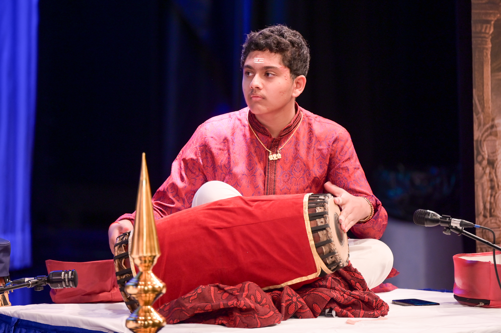
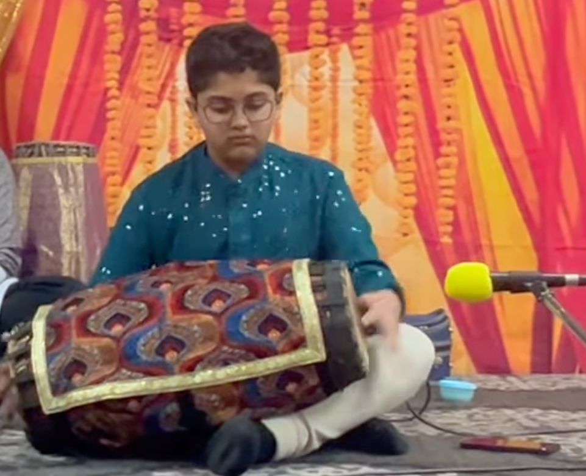
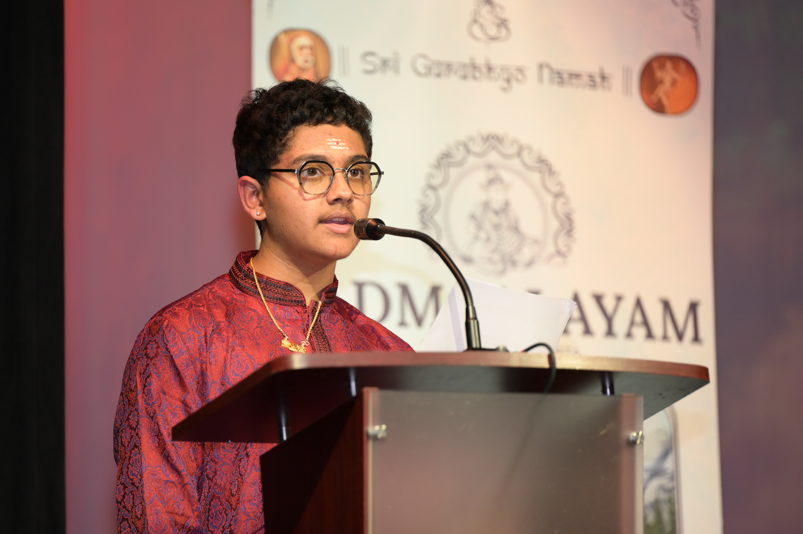

Biography
Rayaansh was introduced to mridangam in 2022, in Calgary, Canada. He performed his arangetram under the tutelage of Kumbakonam Dr. N. Padmanaban at the age of 13. As of 2026, Rayaansh is a student of Kalaimamani Vidwan Shri K.V. Prasad, an exponent of the Thanjavur bani of mridangam. He has performed and competed at esteemed platforms, including Alberta ACTS, Cleveland Thyagaraja Aradhana, SIFAA, and TGS.

Performance Journey
Rayaansh made his debut at the Shri Anagha Datta Temple in Calgary during the 2023 Navaratri Utsav celebrations. Since then, he has performed and competed at several respected venues, including:
- Alberta ACTS Thyagaraja Aaradhana (May 2025)
- The 2025 SIFAA Competition (Oct 2025) - won in Junior Percussion category
- SIFAA MRTP 2025
- NC Swaralaya
- 2026 Cleveland Thyagaraja Aradhana
- 2026 North Carolina Youth Classical Arts for Charity (NCYCAC)
- The 2026 SIFAA Competition (Sep 2026) - won in Senior Percussion category

Arangetram
A major milestone in Rayaansh's musical journey was his mridangam arangetram on August 17th, 2025, in Calgary — a moment that marked his transition from student to a performer.
Looking Ahead
With a foundation built on disciplined training and diverse performance experience, Rayaansh continues to evolve as a committed and passionate percussionist. He remains deeply grateful to his gurus, his parents, and his fellow mridangists and music lovers for their constant support and encouragement.